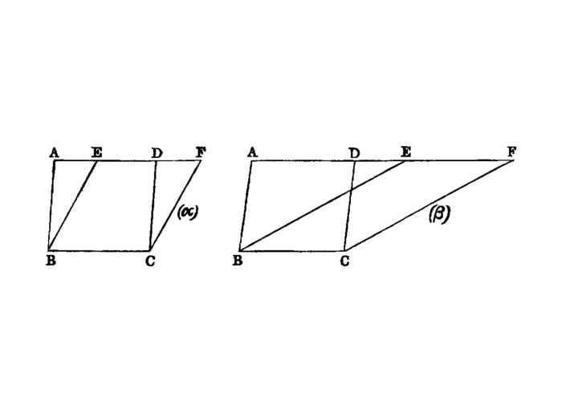
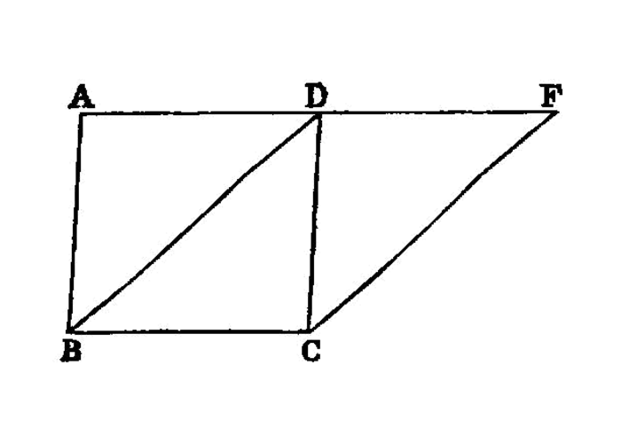

parallelogram equality
 {kind=link}
{kind=link}
Parallelograms which are on the same base and in the same parallels are equal to one another.
===
Let ABCD, EBCF be parallelograms on the same base BC and in the same parallels AF, BC; I say that ABCD is equal to the parallelogram EBCF.
For, since ABCD is a parallelogram,
AD is equal to BC. [I.34]
For the same reason also
EF is equal to BC, so that AD is also equal to EF; [I.c.n.1]
and DE is common;
therefore the whole AE is equal to the whole DF. [I.c.n.2]
But AB is also equal to DC; [I.34] therefore the two sides EA, AB are equal to the two sides FD, DC respectively,
and the angle FDC`[^I.35:1] is equal to the angle `EAB, the exterior to the interior; [I.29] therefore the base EB is equal to the base FC, and the triangle EAB will be equal to the triangle FDC. [I.4]
Let DGE be subtracted [^I.35:2] from each; therefore the trapezium ABGD which remains is equal to the trapezium EGCF which remains. [I.c.n.3]
Let the triangle GBC be added to each; therefore the whole parallelogram ABCD is equal to the whole parallelogram EBCF. [I.c.n.2]
Therefore etc.
## References
[I.4]: /elem.1.4 “Book 1 - Proposition 4” [I.29]: /elem.1.29 “Book 1 - Proposition 29” [I.34]: /elem.1.34 “Book 1 - Proposition 34” [I.c.n.1]: /elem.1.c.n.1 “Book 1 - Common Notion 1” [I.c.n.2]: /elem.1.c.n.2 “Book 1 - Common Notion 2” [I.c.n.3]: /elem.1.c.n.3 “Book 1 - Common Notion 3”
## Footnotes
- [^I.35:1]: FDC
The text has <quote>`DFC`.</quote>
- [^I.35:2]: DGE
Euclid speaks of the triangle DGE without any explanation that, in the case which he takes (where AD, EF have no point in common), BE, CD must meet at a point G between the two parallels. He allows this to appear from the figure simply.